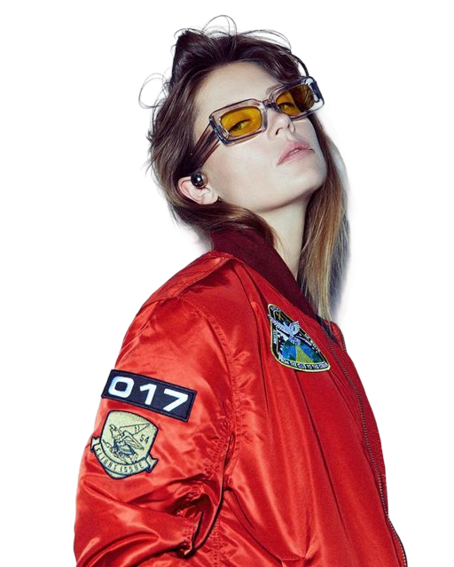

Charlotte de Witte gehört zu den prägendsten Stimmen der modernen Techno-Szene. Mit ihrem kompromisslosen Sound zwischen düsterem Acid, reduziertem Minimal und treibender Energie schafft sie Sets, die gleichzeitig roh, hypnotisch und absolut festivalwürdig sind.
Live auf dem Festival
22. August 2026 · 20:30–22:00 Uhr